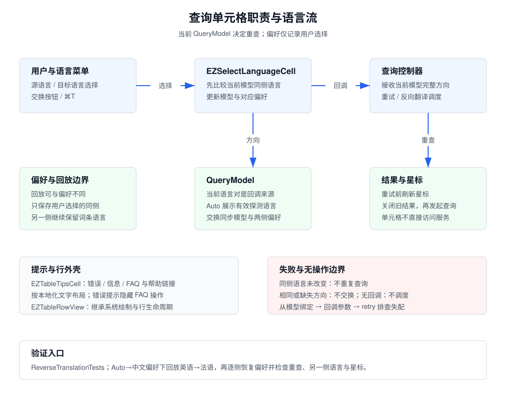

查询单元格概览
Cell 为既有 AppKit 查询表格提供语言选择、提示内容和行外壳。查询控制器拥有请求调度和结果生命周期；这些单元格不直接发起网络请求，也不保存单词本。
| 组件 | 职责与边界 |
|---|
| EZSelectLanguageCell | 展示 QueryModel 的当前语言、处理源/目标选择与交换；回调完整的当前语言对，交由控制器重试。 |
| EZTableTipsCell | 根据提示类型展示错误、警告、信息或常见问题；使用本地化内容和帮助链接，按文字计算高度。 |
| EZTableRowView | 保留 NSTableRowView 的系统绘制和表格行生命周期，不持有业务状态。 |
语言选择流程
- 控制器绑定 QueryModel；语言按钮显示用户语言，Auto 同时展示探测后的有效语言。
- 菜单选择先比较当前模型的同侧语言，再更新该字段和对应偏好。是否重查由模型变化决定，避免回放词条后切回原偏好时漏查。
- 发生变化时，enterAction 回调模型中的完整语言对；另一侧继续使用回放词条的语言，不从偏好重新拼装。
- 交换按钮在两侧有效且不相同时，同步交换模型、按钮和偏好，再触发同一回调。控制器负责是否用已完成译文反向翻译。
- 控制器重试前刷新星标，随后关闭旧结果并重新查询；持久化由 Wordbook 层负责。
失败与调试
- 选中当前相同语言不发起重复查询；相同或缺失的语言对不执行交换。
- 没有 enterActionBlock 时不调度查询。选择器与结果不一致时检查绑定的 QueryModel、回调参数及控制器的 retry 路径。
- 错误/警告/信息提示隐藏 FAQ 操作；FAQ 类型使用对应本地化问题和帮助链接。提示高度异常从文字宽度与 cellHeight 排查。
验证入口
已有 ReverseTranslationTests 覆盖交换、结果方向及无效结果。交互检查使用偏好 Auto→中文、回放英语→法语：分别改为 Auto 和中文，确认每次重查且未改动的一侧保留；重复选择当前值不重复查询。检查空方向不交换、提示样式及帮助入口。
